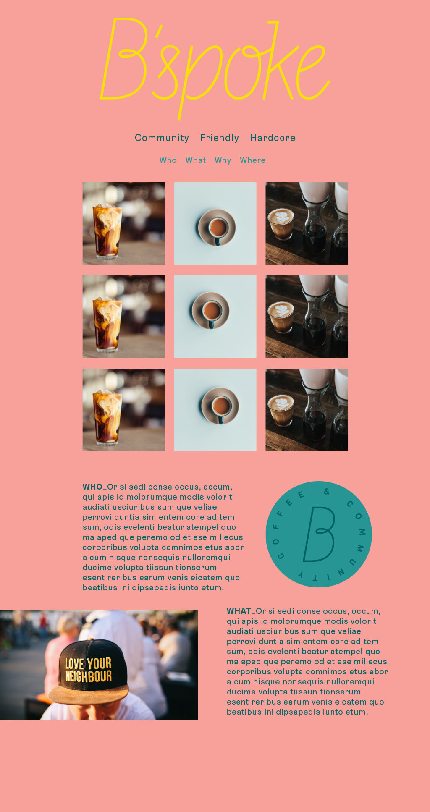
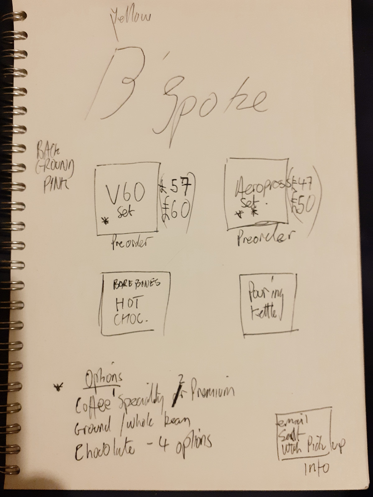
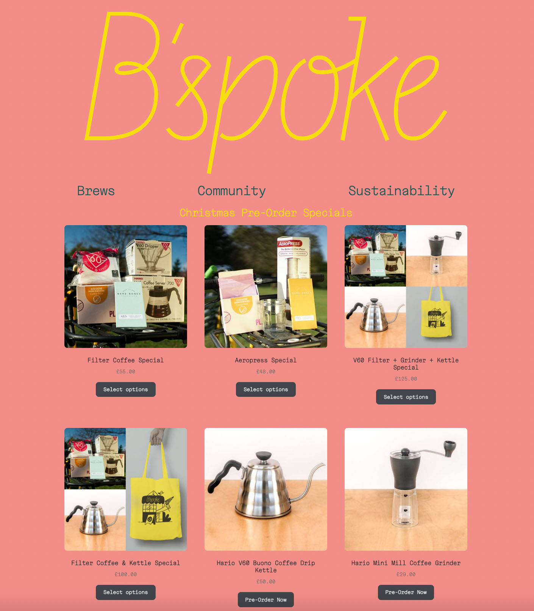
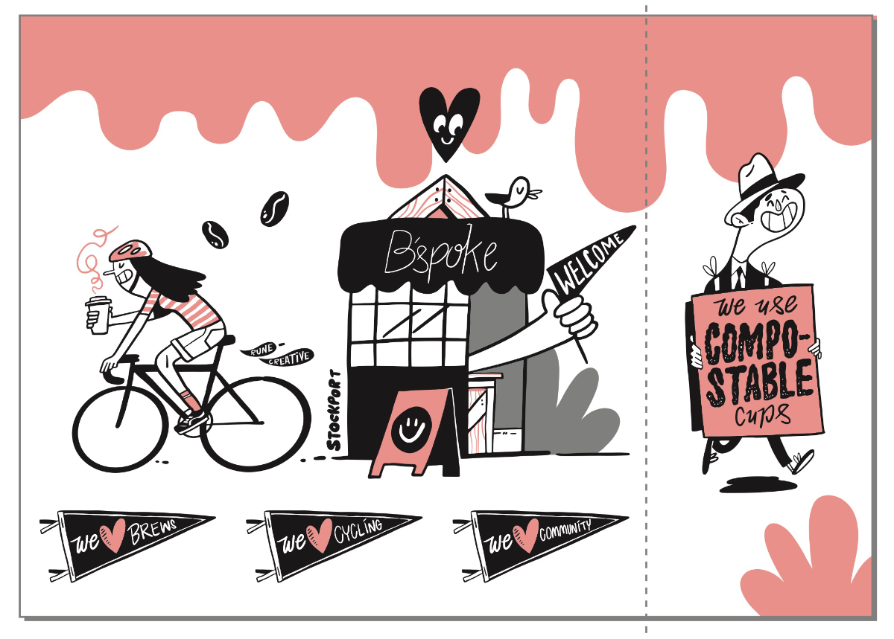
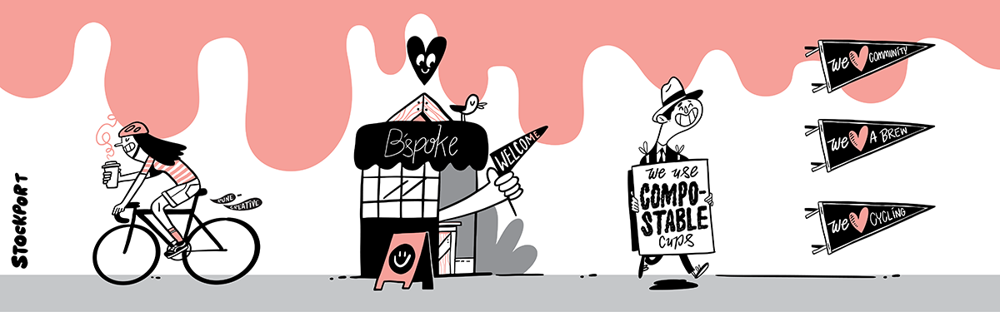
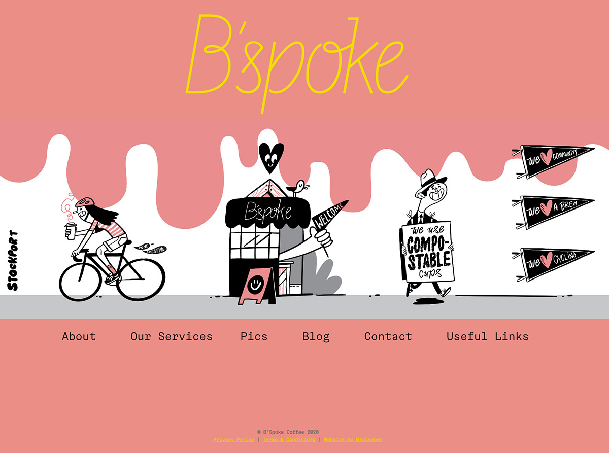
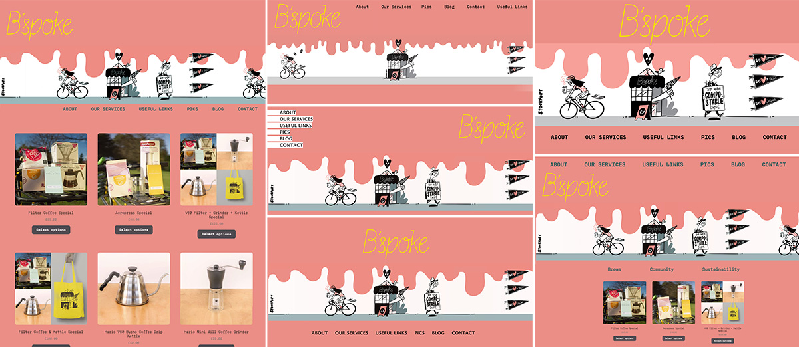
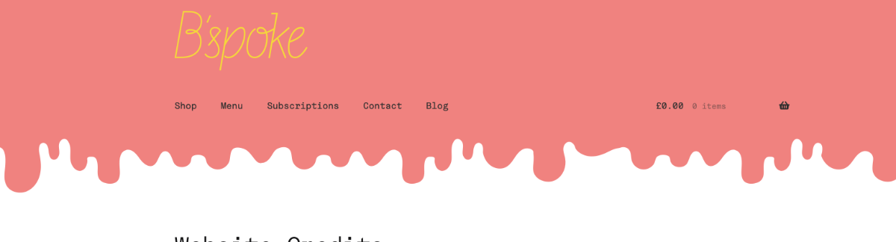
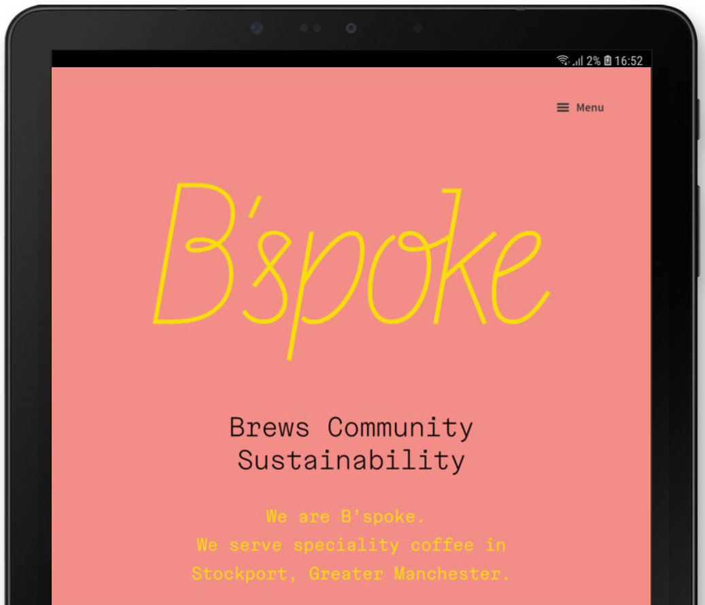
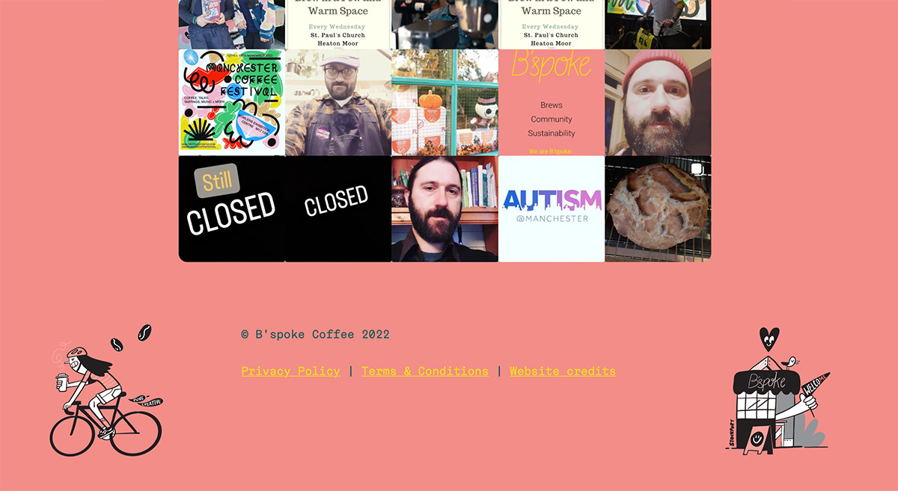

B'spoke Coffee re-design 2022
B'spoke Coffee have had three websites. I created all of them.
The first was an off the shelf free Wordpress theme, that I tweaked and customised, and allowed them to get a fully funtioning website and blogging platform up and running with very little fuss and minimal cost - which as a new company suited them.

Christmas site
The second, was a special one off Christmas site that used WooCommerce within Wordpress and featured their updated logo and concept by designer Adi Wright – http://www.adiwright.co.uk, but was otherwise left to me to design and build. It was intended to and became the initial starting point of the new website. I had never build a WooCommerce sites before.
Adi's Supplied concept below.

Along with this rough drawing from Nick at B'spoke.

Here is how it turned out (screenshot so not showing header or footer)

The third site
The third site was a combination of the previous Christmas site, using the new logo, and a concept created by local artist Pip Claffay – https://www.rune-creative.co.uk
These were her main concepts.

Along with this idea she had for a website header.

I took this idea and created a mockup, and while there are some nice graphics it seemed a little busy.

I actually created a variety of mockups, some ideas below. All too busy.

I needed to simplify the ideas, but liked the dripping graphic, so tried removing that from the homepage, and using it on the inner product pages. I took the dripping pattern and expanded it to create a repeating pattern, so it could work on any size screen. This worked well and is used in the final site.

Then for the homepage, similar to the Christmas design, I removed everything except the logo, and added a menu. Below is the tablet view.

I put some of the original graphics in the footer of the desktop site (mobile design I kept simpler).

I'd been learning to use GSAP javascript animation library, and put my knowledge to good use by animating Pips bicycle graphic, which flies across the screen as you scroll down, and flips direction depending on which way you scroll. It's a fun thing to come across and gives the site more personality. I didn't charge for adding this.
Aside from these designs, I mostly kept WooCommerce's default shop design as the basis for the page layouts. I made minor design tweaks, such as colours and rounded corners, but the existing WooCommerce shop interface is clean, works well.
I had to re-learn WooCommerce, and then learn how to apply customised requests such as free postage over £25, except for subscriptions which have postage included - luckily Wordpress has plugins for every need, and I was able to add snippets of PHP as well (I'm not a PHP programmer, but knowledgeable enough to do simple tweaks.). I also included lessons on how they can update the website themselves.
B'spoke are very happy with their website.
You can visit it at bspokecoffeehouse.co.uk